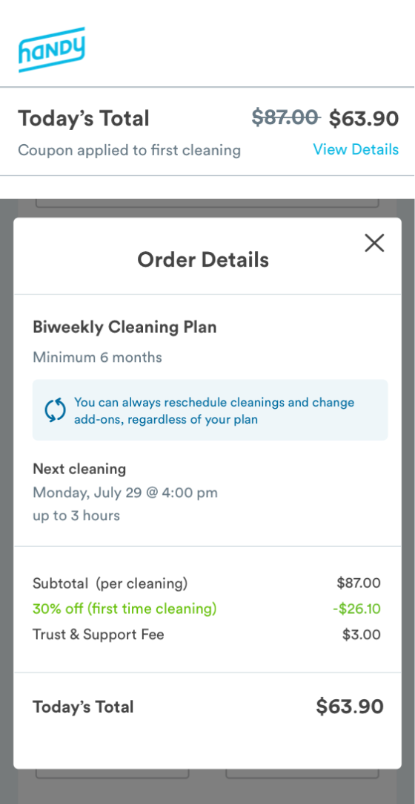
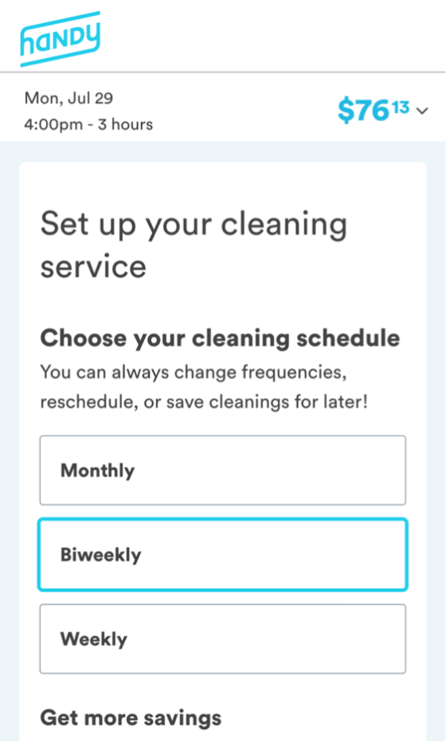
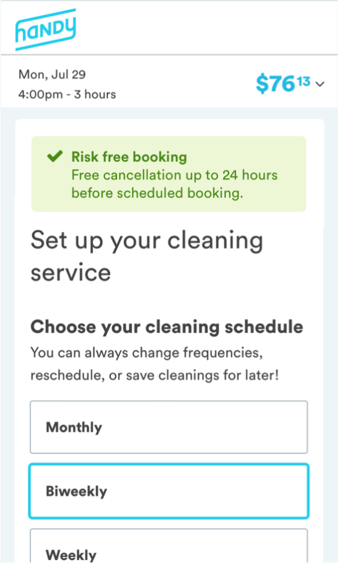
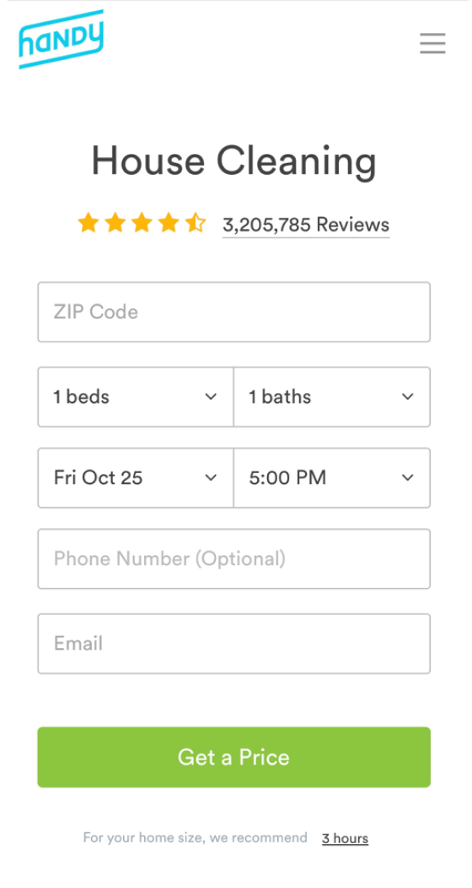

Designing for Growth

Overview
Handy is an online two-sided marketplace for cleaning and home services. One of their biggest revenue drivers is recurring home cleaning.
In order to off-set high costs to acqcuire new customers, the product and marketing team was tasked with the challenge of improving overall conversion. This meant coming up with creative ways to optimize the checkout flow to not only get more customers to come to the Handy website but also convert them at a higher rate.
Role & Duration
- Lead Designer. Research, wireframing, testing and prototyping
- Team of 3 engineers, 3 marketers, and 1 PM
- 10 weeks | June - Aug 2019
Problem Framing
While the problem we were tackling from the business perspective was relatively straightforward, the problem we were solving for the customer wasn’t so clear.
Reframing the problem from the perspective of the customer helped orient our problem solving to find solutions that could yield the highest impact.


Research & Ideation
As a new team member, it was important that I understood the cleaning landscape. Where do customers shop around for cleaning services? What are their mindsets when they arrive at Handy’s website? What are they most excited about and what deters them from making a booking?
My research was ongoing and can be summed up by four phases:
Data Analysis
Identity drop-off points as opportunities for optimization
Customer Feedback
Understand mindset & Identify barriers to booking
Usability Testing
Uncover problems with current flow
Comp Analysis
Understand competition, uncover UI trends
Data Analysis
Most customers come to Handy’s website from a google search, which lands them on what we call the “When” Page. After entering basic job details, customers click ‘Get a Quote’ which takes them to the “Payment” page. Here, the price of the service is revealed for the first time.

Understanding Drop off
As you can imagine, most first-time customers who land on the Payment page bounce (especially on mobile web). This could be for various reasons, like wanting to shop around for a better deal or not having a credit card on hand.
Identifying drop off points and contextualizing the data with qualitative user research (e.g. customer calls) helped us identify opportunities to engage customers more effectively through each phase of the purchase funnel.
70%
of users drop off Payment Page before completing a booking. Drop-off is even greater on mobile web.
Optimize Payment Page
Optimize the payment page (especially on mweb) to reduce drop off rate
50%
of users return to the Payment Page at least once within 14 days to make a booking.
Streamline Return Experience
Streamline the return experience for logged-out users to encourage customers to book
Customer Feedback
Whenever I could, I would reach out to customers at different phases of the purchase funnel (pre to post-booking) to listen and understand their perspective. I also looked at CX tickets, read reviews on social channels, and regularly sent out email questionnaires to identify reasons customers either bounce or cancel their subscription early.
Across each feedback channel, common pain points emerged. I looked at competitors to understand how they tackle some of these pain points and created an affinity map to help me visually patterns and opportunities.

Usability Testing
Since I was working off existing designs, I wanted to evaluate the current checkout flow to uncover low-hanging fruit. Specifically, I wanted to learn: are there usability issues that may cause confusion or hesitation? Do users’ expectations for a cleaning service align with the information presented to them? Are there lingering questions left unanswered?
Usability testing helped me better understand how users engage with the current checkout flow and identity some points of friction.
Comp Analysis
Throughout the initiative I took a bunch of competitor screenshots to help visualize the landscape. I looked at direct competitors as well as companies that sell subscriptions, like meal plans. One common pattern among competitors was multi-page checkout flows.
I found this to be interesting given the increased likelihood that customers would abandon their purchase with every added page. The multi-page trend suggests a clear benefit: customers likely prefer to be taken step-by-step through a checkout experience, allowing them to carefully think through their purchase and confirm all necessary information.

What We Tested
Both Product and Marketing created a roadmap of experiments which we tracked on a weekly basis. We performed a bunch of A/B tests aimed at optimizing the payment experience, from simple UI changes to a new user flow.
Below I summarize a few of those tests.

UI Optimization
A/B Test UI Changes
The team conducted a bunch of UI A/B tests, from urgency badges to small changes in form copy. The goal was to think of ways to make people feel better about their purchase decision using visual cues. Each small UI change aimed at improving trust and reducing risk.
Receipt UI Optimize: Win
- Highlight discount
- Increase contrast
- Maintain scroll
Length: 2-weeks
Metric: Conversion via page CTR
Experiment: Experiment outperformed the control by ~3%
Control

Test
Free Cancellation: Paused
- Reduce risk
- Increase transparency
Length: 2-weeks
Metric: Conversion via page CTR
Experiment: Experiment outperformed control on mweb more than web. But we had to stop half-way due to legal concerns.
Control
Test
Personalized Return: Null
- Personalized copy
- Auto-fill input fields
Length: 2-weeks
Metric: Conversion via page CTR
Experiment: Experiment did not outperform control by statistically significant amount.
Control
Test

What if customers didn't have to pay?
Simple UI changes can only move the needle so much. What if we could create a shopping experience where customers could reserve a cleaning appointment without paying?
Book Now Pay Later
Under this new framework, customers would be given the option to pay now vs. later, and told that their booking would be cancelled if payment isn't received at least 24 hours before their scheduled appointment.
We wanted to learn just how customers would behave when the risk of making a booking was eliminated. While we expected more customers to book, we didn’t know whether or not customers would actually follow through or if they would simply reserve and flake.